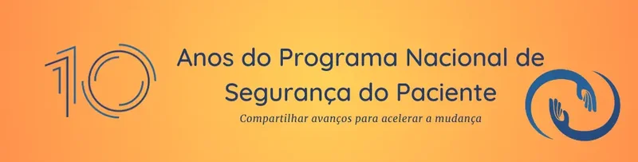
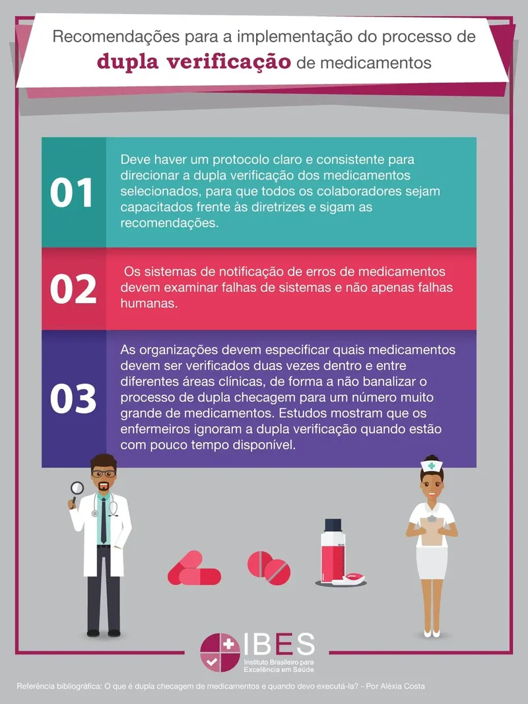
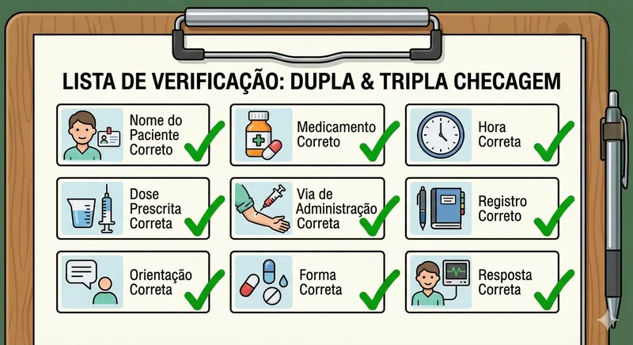
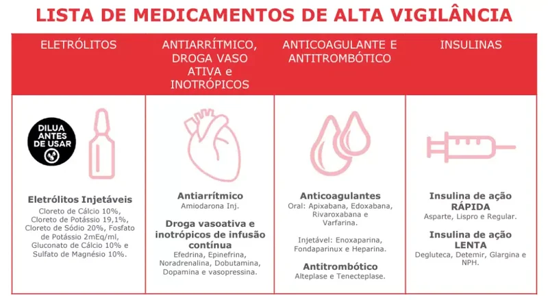
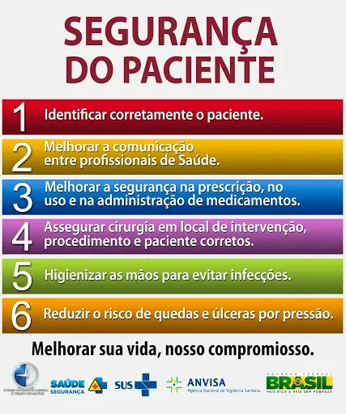
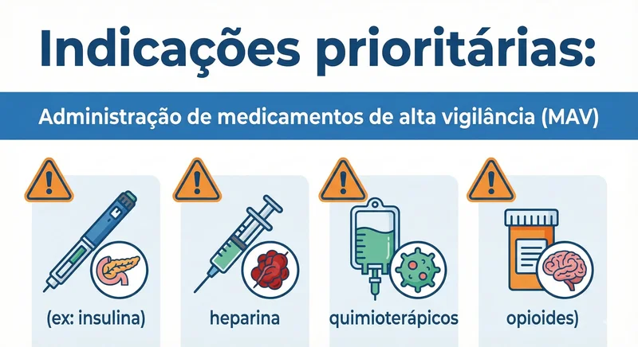
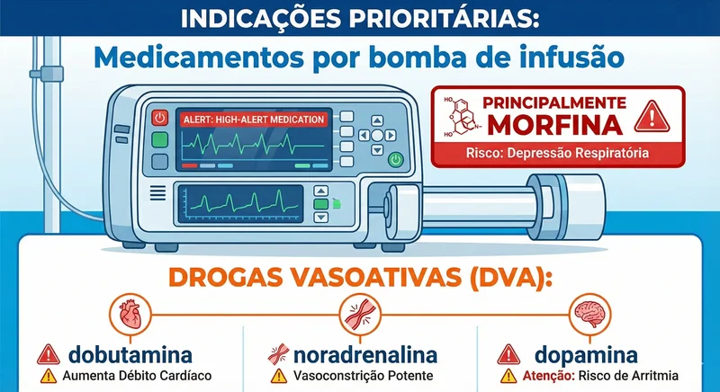
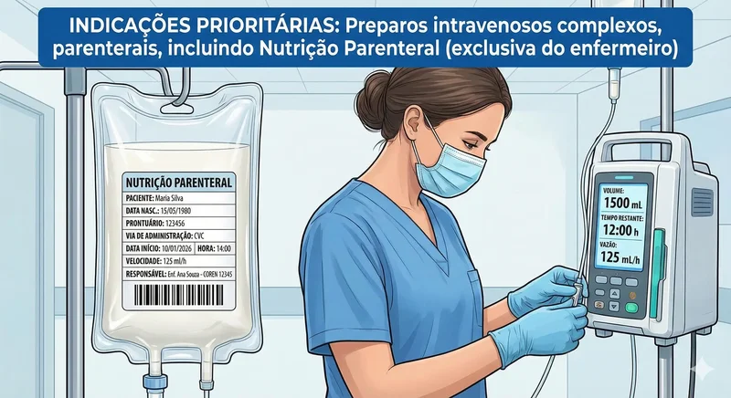

Dupla e Tripla Checagem da Prescrição Médica pela Enfermagem
A dupla e a tripla checagem são práticas de segurança recomendadas no processo de prescrição, preparo e administração de medicamentos, com o objetivo de reduzir erros e danos ao paciente no ambiente hospitalar. Essas estratégias integram ações de prevenção previstas pelo Programa Nacional de Segurança do Paciente (PNSP), do Ministério da Saúde, e estão alinhadas com a Meta Internacional de Segurança do Paciente nº 3: "Melhorar a segurança na prescrição e no uso de medicamentos".

O que é a Dupla Checagem (Double Check)?

A dupla checagem consiste na verificação independente de informações críticas por dois profissionais habilitados (normalmente técnico de enfermagem e enfermeiro), especialmente quando se trata de medicamentos de alta vigilância (MAV) ou em situações de alto risco. O objetivo é detectar possíveis erros antes que o medicamento seja administrado ao paciente.
Durante a dupla checagem e tripla checagem, os profissionais devem confirmar:
- Nome do paciente correto - Repita em voz alta para o paciente e o acompanhante o nome completo do paciente, data de nascimento e nome da mãe
- Medicamento correto - Atenção para nomes de medicamentos parecidos, verificar pois por vezes o nome do farmaco pode vir com nome comercial ou principio ativo
- Hora correta - Deve ser seguido rigorosamente! Meia noite não é 22 horas da noite.
- Dose prescrita correta - Medicamentos incomuns de serem utilizados podem causar esta duvida, confirmar com seu enfermeiro e com o médico é essencial.
- Via de administração correta - Atenção a via de administração, verifique a apresentação no frasco do medicamento, na prescrição medica, pesgunte ao enfermeiro em caso de duvidas, se a duvida persistir ligue para o farmaceutico de plantao ou para o médico prescritor.
- Registro correto - Todas as etapas do preparo e administração do farmaco devem ser anotadas, acrescente que aplicou metas 1,2 e 3 das metas internacionais de segurança do paciente ao final da anotação.
- Orientação correta - Antes, durante e após esteja sempre a disposição do paciente para explicações sobre o medicamento, em caso de dúvidas não pense duas vezes: Chame o enfermeiro para conversar com o paciente
- Forma correta - Observe a forma do medicamento: comprimido, dragea, liquido, pó de diluição; Evite masserar, triturar, cortar o medicamento.
- Resposta correta - Verificar reações adversas e o principal se o medicamento apresentou o efeito desejado.

O que é a Tripla Checagem?

A tripla checagem é um procedimento mais rigoroso que envolve a conferência do medicamento por três profissionais distintos, geralmente incluindo um profissional farmacêutico clínico ou médico que prescreveu ou plantonista na etapa final. Cada um realiza sua verificação de forma independente e sequencial, assegurando que não haja erros em nenhuma fase do processo.
Ela costuma ocorrer da seguinte forma:
- 1ª checagem: realizada por quem retira o medicamento da farmácia (técnico de enfermagem);
- 2ª checagem: feita pelo enfermeiro da unidade durante o preparo junto com o técnico de enfermagem;
- 3ª checagem: realizada por um terceiro profissional médico responsável pela prescrição/plantonista — e/ou o farmacêutico clínico — antes da administração no paciente (A terceira checagem nao necessariamente é realizada após o preparo da medicação, o IDEAL é que o terceiro profissional esteja na participação do preparo do medicamento).
Essa prática fortalece a cultura de segurança e reduz a ocorrência de erros de medicação. Respeita as normas legais estabelecidas pelos Conselhos de classe e observa as metas internacionais de segurança do paciente nº 1, 2 e 3.

Indicações prioritárias:
- Administração de medicamentos de alta vigilância (MAV) (ex: insulina, heparina, quimioterápicos, opioides, drogas vasoativas (DVA).)
- Medicamentos por bomba de infusão principalmentes Drogas vasoativas (DVA), e Opióides potentes
- Preparos intravenosos complexos, paraenterais, incluindo Nutrição paraenteral (exclusiva do enfermeiro)
- Populações vulneráveis (neonatos, pediatria, UTI) Atenção as dosagens prescritas, rediluição de medicamentos, uso de bureta e bomba de infusao. Confirmação dos dados pessoais do RN/Criança e os dados completos da mãe




Bibliografia:
- BRASIL. Ministério da Saúde. Programa Nacional de Segurança do Paciente – Portaria MS/GM nº 529, de 1º de abril de 2013.
- ANVISA. Protocolo de Segurança na Prescrição, Uso e Administração de Medicamentos. 2013.
- ISMP Brasil. Instituto para Práticas Seguras no Uso de Medicamentos.
- Organização Mundial da Saúde. WHO Patient Safety.